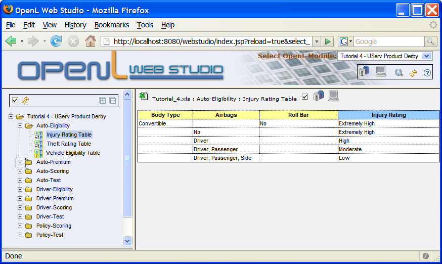

and Developer's Mode
and Developer's Mode
 . In a future we may allow user to create customizable view modes, but for now
we will use these two pre-defined modes.
. In a future we may allow user to create customizable view modes, but for now
we will use these two pre-defined modes.
By default the project will start in the Business Mode. This decision is not based on the assumption that it is easier to teach a Developer to switch to the Developer's Mode than Business User to the Business Mode (no research have been done in this area and we can not base our judgement on some anecdotal evidence). The decision owes more to the fact that Business Mode is more convenient for both Developers and Business Users.
Here is comparison table between two modes:
| Feature | Business Mode | Developer's Mode |
|---|---|---|
| Level of Detail | Less technical | More technical |
| Project Tree | By user-defined categories | By component type, by physical location |
| Component Name | User-friendly display name | Technical name |
| Table View | Without Technical Details | Full View with all the technical details |
| Show Components | Only if property name is defined | All |
Currently, there are 3 slightly different Business Modes. To switch between modes one needs to repeatedly press Business Mode icon. Modes differ in the way they display user-defined categories.
Here is how the Tutorial 4 Project looks like in the Business Mode 1

Here is how the same Project looks like in the Business Mode 2
The only difference between the Business Mode 1 and Business Mode 2 is the depth of the Category Tree.
Each OpenL project component can have optional user-defined properties. For example:

This table has 2 user-defined properties: name=Vehicle Eligibility Score Table and category=Auto-Scoring.
OpenL Tablets Studio uses these properties to display Project Component in user-friendly way. If property category
is not defined the Studio will use the name of the Excel Worksheet where the Project Component table is located.
Only the components where the property name is defined will be displayed in the Business Mode.
In this mode, Project Tree contains two different hierarchies:
The main difference with the Business Mode lies in the level of technical details. It should be understood that different modes are better suitable for different activities and different audiences. You are encouraged to try them all and submit your suggestions on how to improve eixsting modes.